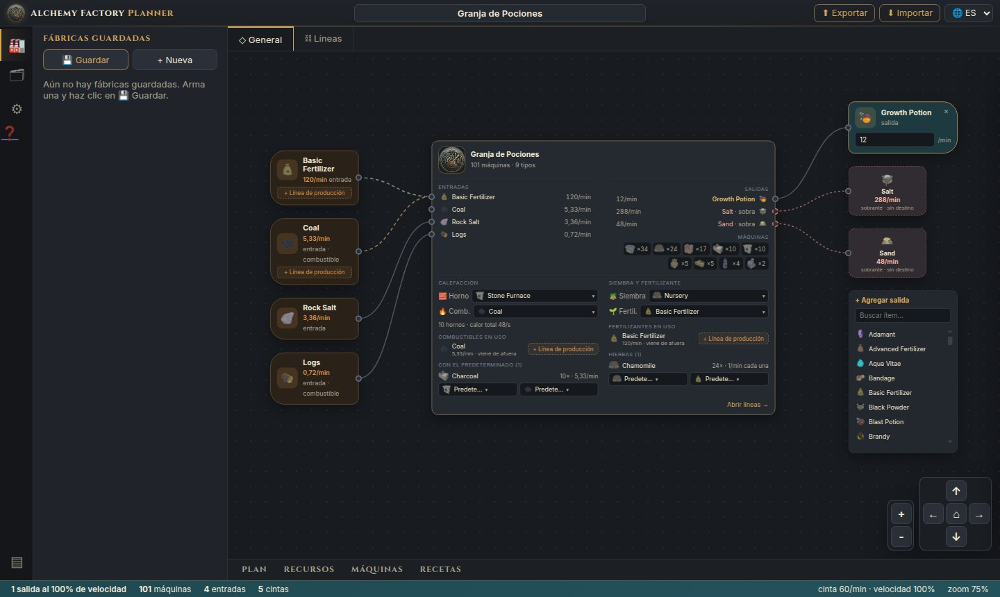
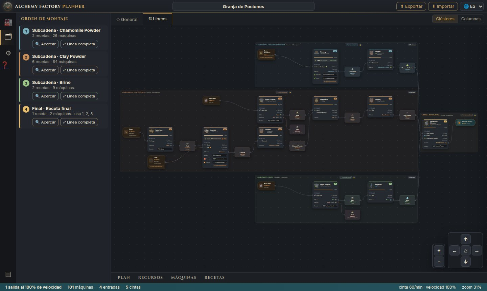
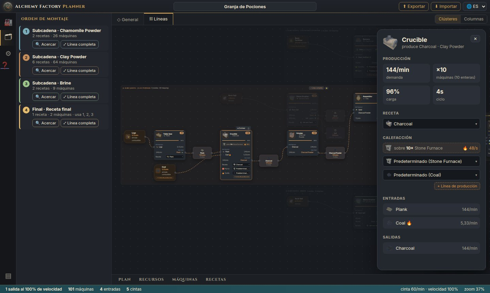
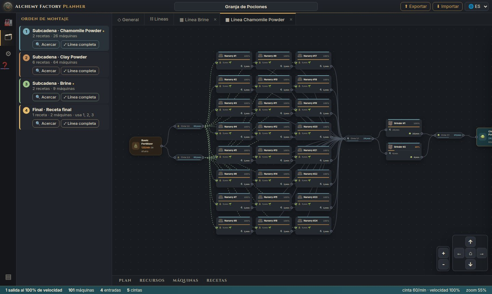
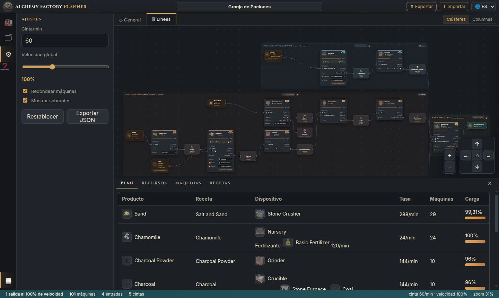
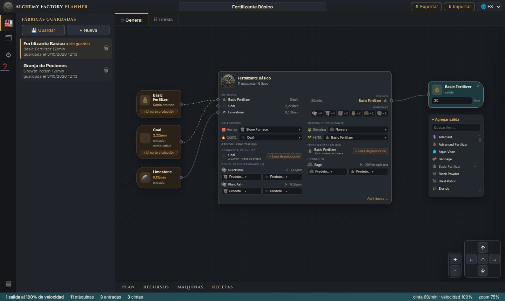

Cómo usar Alchemy Factory Planner
El planner calcula cuántas máquinas, cintas, hornos, combustible y fertilizante necesita tu fábrica para producir lo que quieres, y muestra el orden para montarla. Esta guía recorre cada parte de la herramienta.
1 Inicio rápido
- Elige qué producir. En la pestaña ◇ General, usa + Agregar salida, busca el ítem y haz clic en él.
- Define la meta. En el nodo de la salida, escribe cuántos ítems por minuto quieres.
- Mira la fábrica. Abre la pestaña ⛓ Líneas para ver máquinas, cintas y el orden de montaje.
- Guárdala. Haz clic en 💾 Guardar en la barra lateral, o comparte el enlace de la página.
La app se abre vacía. Todo lo que armas queda en la dirección de la página (?fabrica=…), así que recargar no borra nada.
2 Conociendo la pantalla
La pantalla se divide en áreas fijas, con el diagrama de la fábrica en el centro.

- Barra de título
- Nombre de la fábrica (haz clic para editarlo), los botones ⬆ Exportar y ⬇ Importar y el selector de idioma.
- Barra de actividades
- 🏭 fábricas guardadas · 🗂 orden de montaje · ⚙ ajustes · ❓ este tutorial · ▤ panel de tablas. Hacer clic en el ícono activo oculta la barra lateral.
- Pestañas
- ◇ General (entradas y salidas), ⛓ Líneas (todas las máquinas) y una pestaña ▦ Línea … por cada bloque que abras.
- Barra de estado
- Salidas, total de máquinas, entradas, líneas de cinta, velocidad y zoom.
Moverse por el diagrama: arrastra el fondo para moverte, usa la rueda del ratón para el zoom, los botones + − y las flechas de la esquina, y ⌂ para encuadrar todo.
3 Crear la fábrica (pestaña General)
La pestaña General muestra la fábrica como un solo bloque: lo que entra de afuera a la izquierda, el nodo Fábrica en el medio y las salidas a la derecha.
- Agregar salida: en el nodo + Agregar salida, busca el ítem y haz clic en él. Puedes tener varias salidas a la vez.
- Meta: edita los ítems/min directamente en el nodo de la salida. ✕ quita la salida.
- Nodo Fábrica:
- Entradas: lo que viene de afuera, y en morado los insumos producidos aquí.
- Salidas y sobrantes.
- Los tipos de máquina con sus cantidades.
- Los valores predeterminados de calefacción, siembra y fertilizante.
- Nombre: haz clic en el título arriba de la pantalla para ponerle nombre a la fábrica.
Haz clic en el nodo Fábrica (o en Abrir líneas →) para ir a la pestaña Líneas.
4 Hornos y combustible
Las máquinas calientes (Crucible, Kiln, Athanor, Alembic, Iron Smelter…) van encima de un horno, uno por máquina física, y es el horno el que quema el combustible.
- Predeterminado de la fábrica: en el nodo Fábrica, en Calefacción, elige el horno (Stone o Blast Furnace) y el combustible predeterminados.
- Elección manual: cada máquina puede usar otro horno u otro combustible, con el selector del propio nodo, en el panel de detalles o en la lista del nodo Fábrica. La opción Predeterminado (…) vuelve a seguir el predeterminado. Cambiar el predeterminado nunca altera las máquinas manuales.
- Línea de producción: por defecto el combustible viene de afuera. Si se puede fabricar, + Línea de producción agrega a la fábrica la cadena que lo produce, y ✓ Línea propia la quita.
Ciclos: si la línea de un combustible necesita ese mismo combustible (p. ej. Charcoal Powder quemado en el Crucible que hace Charcoal), la línea también produce lo que ella misma consume. La vuelta se dibuja como una línea punteada morada.
5 Siembra y fertilizante
Las hierbas se pueden sembrar de dos formas, elegidas en el nodo Fábrica (predeterminado) o en cada hierba (manual):
| Nursery | Seed Plot | |
|---|---|---|
| Semilla | Queda plantada, no se consume | Se consume |
| Fertilizante | Se consume de forma continua | No usa |
| Velocidad | Definida por el fertilizante | Tiempo de la receta |
En el Nursery, el fertilizante hace mucha diferencia. Ejemplo con 24 Chamomile/min:
- Basic Fertilizer: 1 hierba/min por Nursery, o sea, 24 Nurseries y 120 fertilizantes/min.
- Advanced Fertilizer: 12 hierbas/min por Nursery, o sea, 2 Nurseries y 24 fertilizantes/min.
El fertilizante también puede tener + Línea de producción, igual que el combustible.
6 La pestaña Líneas

- Nodos: cada receta es un nodo de máquina, con el ícono, la cantidad (
×10), la carga y las entradas y salidas por ítem. Entre dos máquinas está el nodo del ítem transportado, con la tasa y el número de cintas. - Clústeres o Columnas (esquina superior derecha):
- Clústeres separa la fábrica en bloques, uno por ingrediente de la receta final, más un bloque para cada combustible o fertilizante con línea propia.
- Columnas muestra un solo grafo.
- Orden de montaje (🗂): lista los bloques en el orden en que deben construirse, con 🔍 Acercar y ⤢ Línea completa.
- Bloques:
- Un clic acerca el bloque.
- ⊟ Contraer oculta el interior.
- El candado 🔒 fija la posición (por defecto). Con 🔓 puedes arrastrar el bloque y los nodos.
- Resaltado: pasa el ratón sobre un nodo para resaltar su camino hasta las entradas y las salidas.
7 Detalles de una máquina

El panel muestra:
- la demanda, las máquinas (exactas y enteras), la carga y el ciclo de la receta;
- la receta, el horno, el combustible y el fertilizante, todos editables;
- las entradas y salidas con sus tasas.
Cambiar algo recalcula la fábrica al instante. Si entran o salen máquinas, parpadean y un aviso resume el cambio.
8 Línea completa: máquinas y cintas

⤢ Línea completa abre el bloque en una pestaña propia, mostrando el montaje físico:
- Máquinas: cada máquina física es un nodo (Grinder #1, #2…), con su carga. La máquina parcial aparece punteada.
- Cintas: cada cinta es un nodo. 144/min con cinta de 60/min se vuelven 3 cintas de 48.
- Bordes del bloque: lo que viene de afuera aparece como entrada, y lo que sale va al siguiente bloque, al producto final o a los sobrantes.
Puedes abrir varias líneas a la vez. Cada pestaña recuerda su propio zoom, y ✕ la cierra.
9 Tablas y ajustes

- Panel inferior (▤ o las pestañas):
- Plan: tabla de máquinas.
- Recursos: materias primas y sobrantes.
- Máquinas y Recetas: catálogos.
- Ajustes (⚙):
- capacidad de la cinta (ítems/min);
- velocidad global;
- redondear máquinas a enteras;
- mostrar sobrantes;
- Restablecer y Exportar JSON.
10 Guardar y compartir

- Fábricas guardadas (🏭):
- 💾 Guardar guarda la fábrica en el navegador (la actualiza si ya existe).
- + Nueva empieza una fábrica vacía.
- Haz clic en una fábrica para abrirla, con las pestañas que estaban abiertas. 🗑 la elimina.
- Código: ⬆ Exportar genera un texto
AFP1.…con la fábrica entera. ⬇ Importar recrea la fábrica a partir de él. - Enlace: la dirección de la página siempre contiene la fábrica actual (
?fabrica=…). Envía el enlace para que alguien abra exactamente la misma fábrica.
11 Cómo funciona el cálculo
Los datos de recetas, máquinas, calor y nutrientes vienen del Alchemy Factory Codex.
- Máquinas
- demanda ÷ producción por máquina (salida de la receta × 60 ÷ tiempo × velocidad). Con Redondear, el total de cada receta se redondea hacia arriba una sola vez.
- Combustible
- (calor de la máquina + calor del horno) × máquinas × 60 ÷ valor calorífico del combustible.
- Fertilizante
- hierbas/min por Nursery = 60 × flujo del fertilizante ÷ nutrientes de la hierba; fertilizante/min = hierbas × nutrientes ÷ valor del fertilizante.
- Cintas
- tasa del ítem ÷ capacidad de la cinta, redondeado hacia arriba.
- Ciclos
- se resuelven repitiendo hasta estabilizar; si no se sostienen, el consumo viene de afuera y la fábrica avisa.
12 Consejos
- Elige bien el combustible: el valor calorífico pesa mucho. El Charcoal Powder vale 48 y el Coal 540, así que un combustible débil puede exigir decenas de máquinas solo para alimentar los hornos.
- Fertilizante: el Advanced reduce mucho el número de Nurseries. Compara antes de decidir.
- Sobrantes: aparecen en rojo punteado. Indican ítems que puedes aprovechar en otra fábrica.
- Recargar: si algo parece desactualizado después de una actualización de la app, recarga con Ctrl+Shift+R.